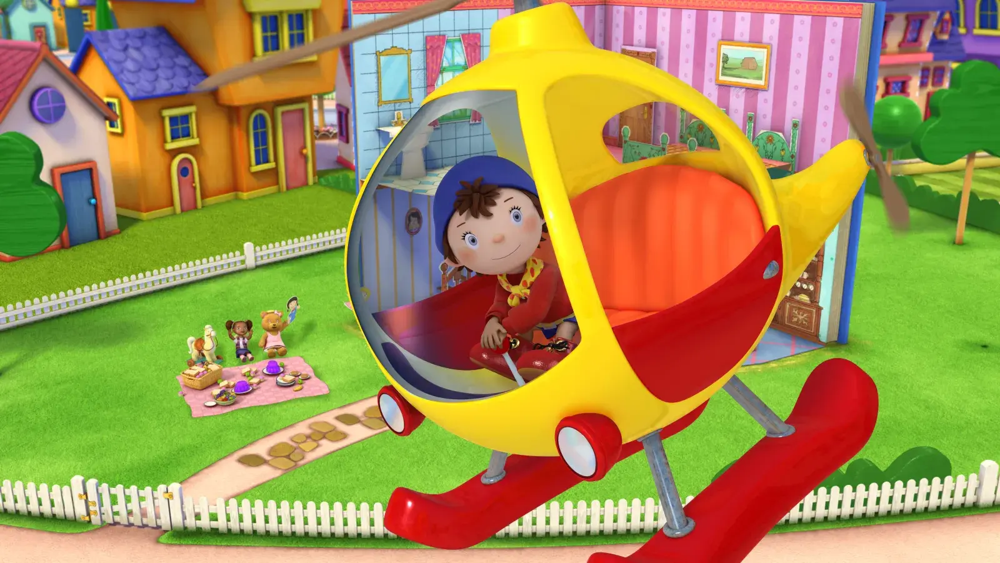
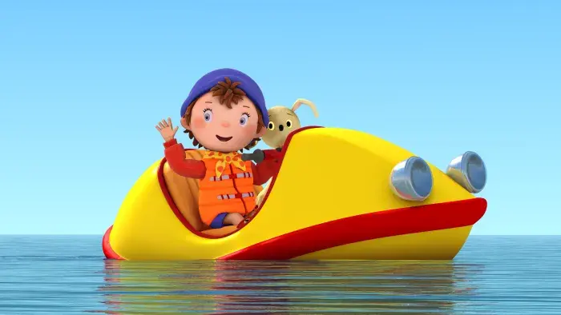

Noddy


Details
My notes
Noddy.
About
Noddy is Enid Blyton’s little wooden character who lives in Toyland. His red and yellow taxi and friends are recurring parts of the stories. The character has appeared in several television adaptations, so “Noddy” alone does not identify one series.
Which version?
The specific series and the years I watched it are not recorded yet. Possibilities to compare include the stop-motion Noddy’s Toyland Adventures and the CGI Make Way for Noddy. The gallery here uses clearly labelled reference stills from the separate 2009 Noddy in Toyland production; they are not proof that it was my version.